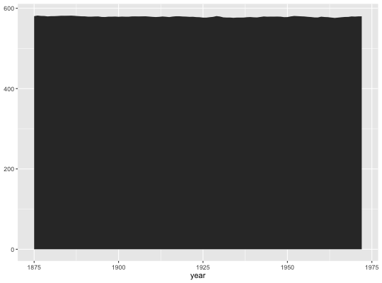
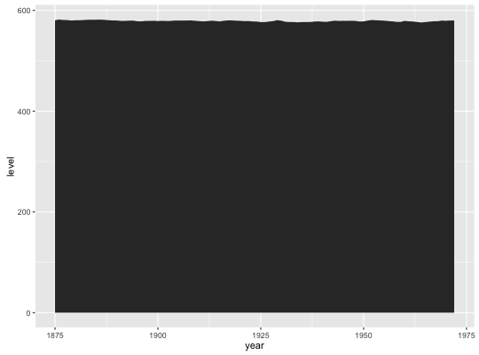
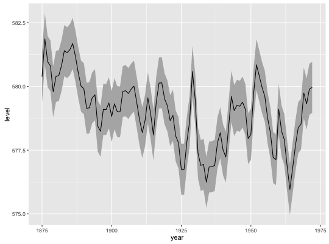

geom_ribbon(mapping = NULL, data = NULL, stat = "identity", position = "identity", na.rm = FALSE, show.legend = NA, inherit.aes = TRUE, ...)geom_area(mapping = NULL, data = NULL, stat = "identity", position = "stack", na.rm = FALSE, show.legend = NA, inherit.aes = TRUE, ...)
aes or
aes_. If specified and inherit.aes = TRUE (the
default), is combined with the default mapping at the top level of the
plot. You only need to supply mapping if there isn't a mapping
defined for the plot.FALSE (the default), removes missing values with
a warning. If TRUE silently removes missing values.NA, the default, includes if any aesthetics are mapped.
FALSE never includes, and TRUE always includes.FALSE, overrides the default aesthetics,
rather than combining with them. This is most useful for helper functions
that define both data and aesthetics and shouldn't inherit behaviour from
the default plot specification, e.g. borders.layer. There are
three types of arguments you can use here:
color = "red" or size = 3.
stat associated with the layer.
For each continuous x value, geom_interval displays a y interval.
geom_area is a special case of geom_ribbon, where the
minimum of the range is fixed to 0.
An area plot is the continuous analog of a stacked bar chart (see
geom_bar), and can be used to show how composition of the
whole varies over the range of x. Choosing the order in which different
components is stacked is very important, as it becomes increasing hard to
see the individual pattern as you move up the stack.
geom_ribbon understands the following aesthetics (required aesthetics are in bold):
x
ymax
ymin
alpha
colour
fill
linetype
size
# Generate data huron <- data.frame(year = 1875:1972, level = as.vector(LakeHuron)) h <- ggplot(huron, aes(year)) h + geom_ribbon(aes(ymin=0, ymax=level))
h + geom_area(aes(y = level))
# Add aesthetic mappings h + geom_ribbon(aes(ymin = level - 1, ymax = level + 1), fill = "grey70") + geom_line(aes(y = level))
geom_bar for discrete intervals (bars),
geom_linerange for discrete intervals (lines),
geom_polygon for general polygons